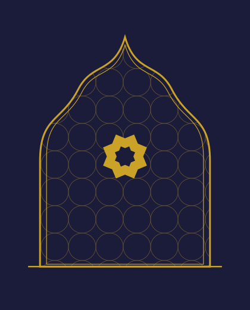

About
This page is deliberately empty of everything that was not provided.
An About page answers one question: who am I going to talk to? Answering it takes verifiable material — a background, an exact number of years, named methods, an authentic photograph, and for each certification the body that issued it.
None of that has been provided yet, and none of it can be invented. That is also what section 4.3 of the specification requires. The page is therefore built, but its content is waiting.
No generated image will stand in for the practitioner, the practice or clients. The panel alongside is a drawn ornament, not a retouched photograph: no one can mistake it for the place.

What is missing, and why
- To be confirmedMain professional nameThe listing reads “Master Skanda”, while a publication by the owner mentions “Master Parasuram”. One name must be chosen, with an alias mentioned only if it is real and acknowledged (decision D-01).
- To be confirmedBackground and exact number of years of experienceAn exact figure, not an approximation.
- To be confirmedMethods practisedNamed as they are actually practised.
- To be confirmedCertificationsEach with its issuing body. A certification with no named issuer cannot be published.
- To be confirmedAuthentic photograph of the practitioner and the practiceWith the author or rights holder and the extent of the authorisation.
- To be confirmedLanguages spokenThose of the consultation, distinct from the languages of this site.